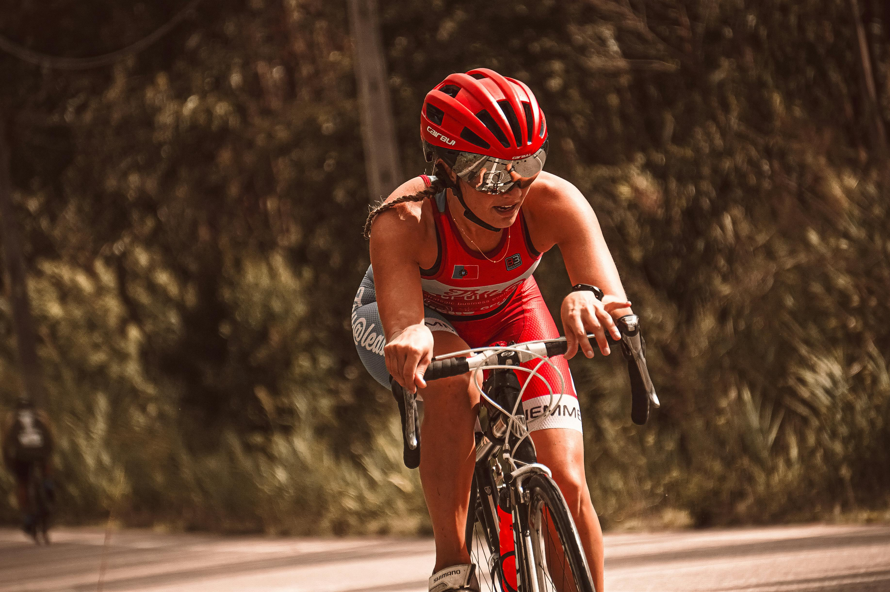
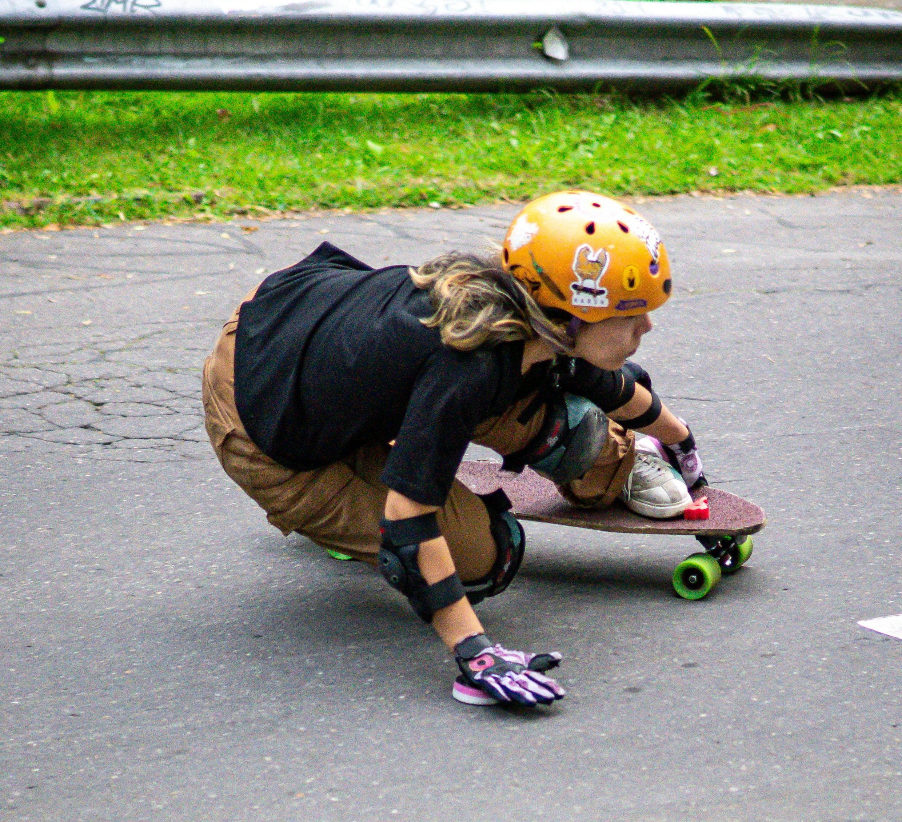
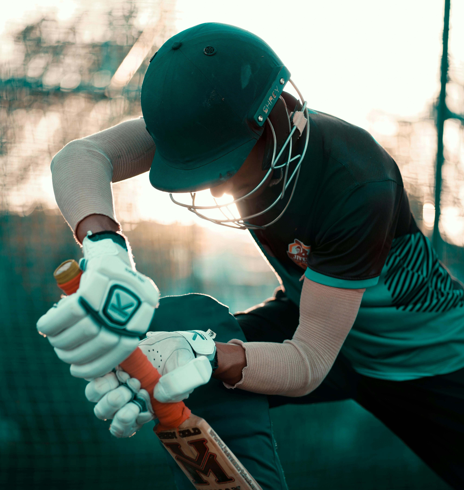
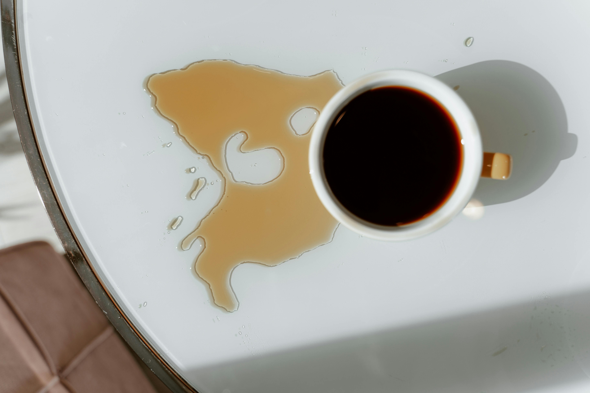

Explore how science and STEM are part of the world around you.
Learning Objective
Learn about how STEM is used to solve problems and create or improve everyday objects
Success criteria
1
I can explain what problem an
everyday object is designed to solve
2
I can identify how science, technology,
engineering, or mathematics is used in an everyday object
3
I can describe how STEM Experts use their knowledge
and skills to design, test or improve everyday objects
Think Like a Scientist
See, Think, Wonder
As scientists we are all curious. We observe the world
around us and ask questions about how the world works.
A way to come up with questions is to use a thinking tool
called See, Think, Wonder.
Practice making observations and asking questions by
following these steps:
SeeWhat do you notice?
ThinkWhat do you think is happening?
WonderWhat questions do you have?
Choose something to explore
Select an object to discover the science and STEM behind it.
Helmet
See / Think / Wonder
SEE
Look at the images below. What do you see?



THINK
What do you think is going on? What makes you think that?
WONDER
What does this make you wonder? What questions would you like to ask?
Did you know?
Helmets are designed using the principles of force, materials, energy, and engineering.
Engineers and scientists work together to:
test how much force a helmet can absorb
study how the brain gets injured
design layers that squash, spread out impact, and protect your head
decide the safest shapes and materials
Helmets protect your head by absorbing and spreading impact energy — just like a sponge spreads water into a larger area.
Try

Try this:
Spill a little water or tea on a table.
Place a paper towel over the spill.
What do you notice?
The paper towel spreads the water out, so there is less water in one place.
Helmets work in a similar way. They spread out the force of a hit, so the impact is less strong, and your head is better protected.
Click on any parts of the helmet below to learn more about them!
True or False: If you put a helmet on without a strap, it will fly off.
Who Helps Keep Our Heads Safe?
Did you know that several STEM experts work together to make bike helmets safe?
Each expert uses different knowledge of STEM to protect your brain.
Click on each STEM expert below to discover what they do to help design safer helmets!